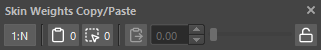
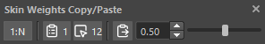
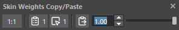

Skin Weights Copy/Paste
How to Launch
Launch the tool from the dedicated menu or with the following command.
import faketools.tools.rig.skinWeights_copy_paste_ui
faketools.tools.rig.skinWeights_copy_paste_ui.show_ui()
Usage
To copy and paste weights, follow these steps:
When copying from single component to multiple components

- Set first button to
1:N. - Select source component and select second button. When selected, source component is remembered. Multiple are remembered but first selected one is used as source.
- Select destination components and select third button. When selected, destination components are remembered.
- Adjust weights from source to destination using spinbox or slider for blending. Also, the rightmost button pastes source weights to destination as is.
When copying between selected components one-to-one

- Set first button to
1:1. - Select source component and select second button. When selected, source component is remembered.
- Select same number of components as source and select third button. When selected, destination components are remembered.
- Adjust weights from source to destination using spinbox or slider for blending. Also, the rightmost button pastes source weights to destination as is.
※ Selecting too many components may cause heavy processing.
Optional Features
Spinbox up/down arrows can change in 0.01 increments when clicked while holding Ctrl key. Also, can change in 0.5 increments when clicked while holding Shift key.